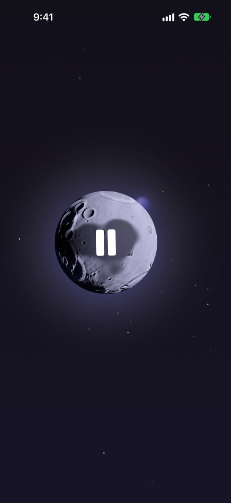
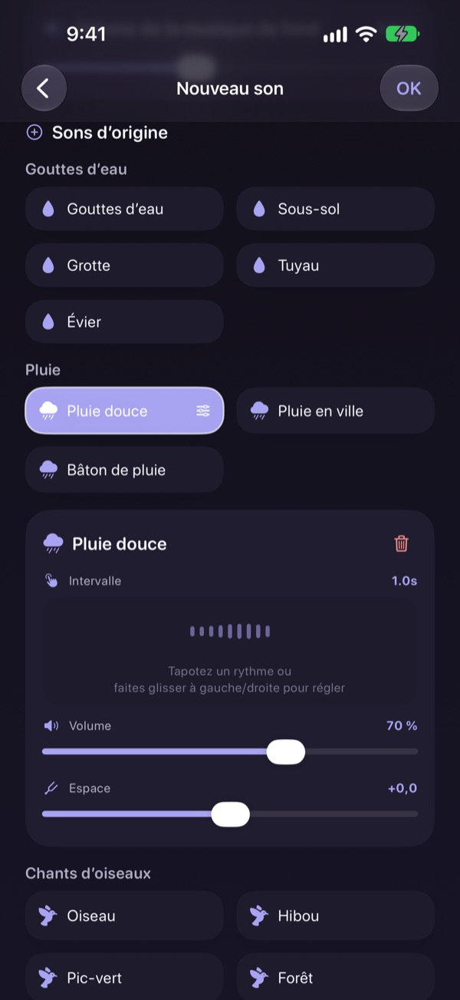
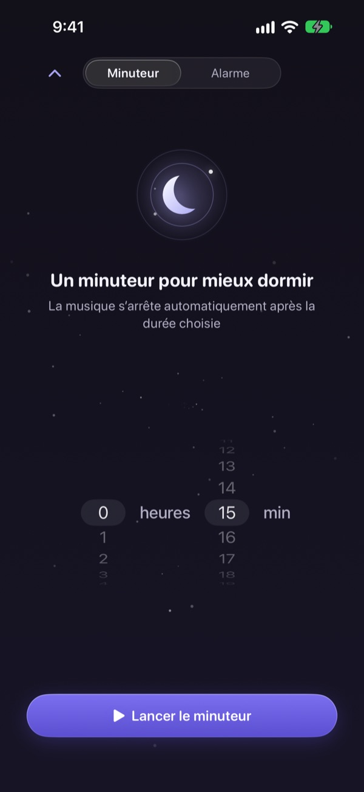
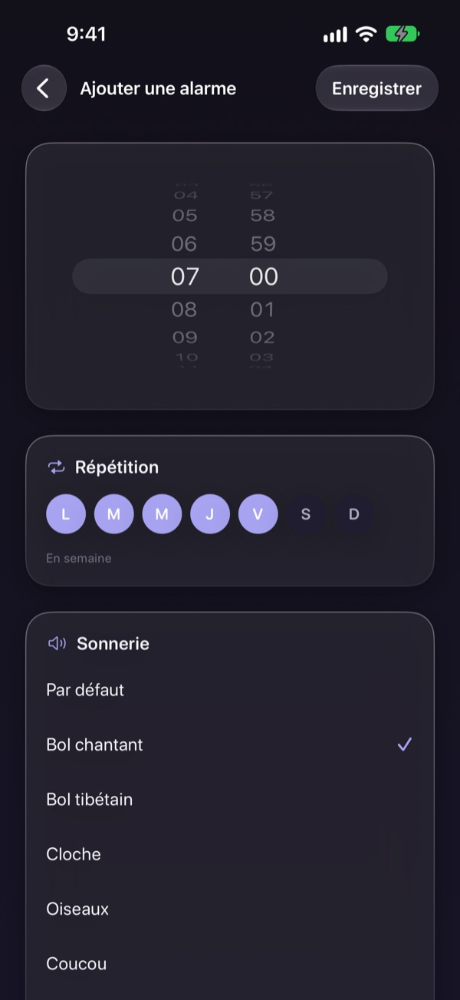
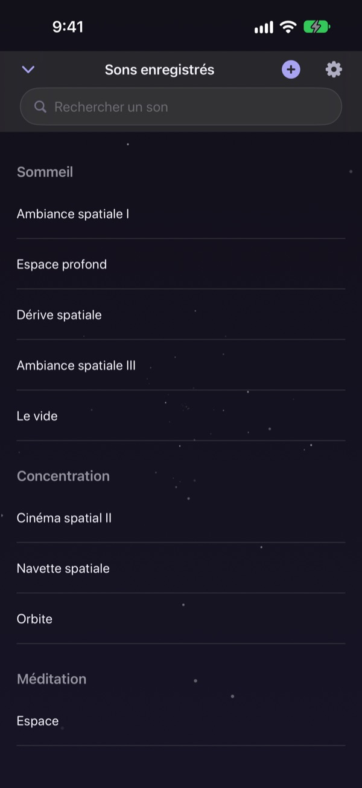

Ne passez plus la nuit
à chercher le bon son
Superposez une fois la pluie, des gouttes d’eau et un bol chantant pour créer votre son. Dès la nuit suivante, il suffit de toucher la lune.
Tous les sons sont gratuits à l’écoute. Sur iPhone et iPad.

Vous avez déjà perdu une heure à chercher de quoi vous endormir ?
La pluie est trop monotone, les vagues trop fortes, et la vidéo lancée s’interrompt pour une pub au milieu de la nuit. Avec Dalbit, vous superposez vous-même les sons que vous aimez jusqu’à obtenir celui qui vous convient, et vous le rangez derrière une seule lune.
Composez votre son par couches
Empilez pluie, gouttes d’eau, chants d’oiseaux et bols chantants. Réglez pour chaque couche le volume, la fréquence et l’endroit d’où elle vous parvient, puis ajoutez des vagues ou du piano en musique de fond.
Donnez un nom au mélange, enregistrez-le et retrouvez-le chaque soir.

Il s’éteint sans vous réveiller
Le minuteur de sommeil ne coupe jamais le son d’un coup : il le baisse lentement pour que la fin ne vous réveille pas.
Le son continue écran éteint ou dans une autre app, et si vous ne touchez à rien, l’écran s’assombrit tout seul.

Un réveil tout en douceur
Réglez des alarmes avec un bol chantant, un bol tibétain, des chants d’oiseaux ou un coucou, et répétez-les les jours de votre choix.

Une lune pour tout faire
Touchez la lune pour lancer le son, encore une fois pour le mettre en pause. Balayez sur le côté pour changer de son, vers le haut pour le minuteur, vers le bas pour vos sons enregistrés.
Un son vous plaît ? Maintenez la lune enfoncée pour l’ajouter aux favoris.

Trois étapes pour commencer
- 1
Touchez la lune
Ouvrez l’app, touchez la lune, et le son démarre.
- 2
Balayez sur le côté
Faites défiler jusqu’à trouver le son qui vous plaît.
- 3
Réglez le minuteur et couchez-vous
Balayez vers le haut, choisissez une durée, puis le son s’estompe.
Ce que fait la lune
- Toucher
- lecture, pause
- Balayer sur le côté
- son suivant
- Balayer vers le haut
- minuteur et alarmes
- Balayer vers le bas
- vos sons enregistrés
- Maintenir
- ajouter aux favoris
Vous pouvez aussi mettre en pause et reprendre depuis les commandes de lecture de l’écran verrouillé.
L’écoute est gratuite. Premium sert à créer davantage.
Gratuit
- Tous les sons
- Superposer des sons pour créer le vôtre
- Jusqu’à trois mélanges enregistrés
- Minuteur de sommeil en fondu
- Alarmes aux sons doux
- Favoris
Dalbit Premium
- Créez et enregistrez autant de mélanges que vous voulez
Abonnement mensuel à renouvellement automatique, avec essai gratuit
L’abonnement se renouvelle automatiquement sauf résiliation au moins 24 heures avant la fin de la période en cours, et il est facturé à la fin de l’essai gratuit. Les conditions d’utilisation standard d’Apple (EULA) s’appliquent.
Questions fréquentes
Comment lancer et changer un son ?
Touchez la lune sur l’écran d’accueil pour lancer le son et touchez-la à nouveau pour l’arrêter. Balayez sur le côté pour un autre son, vers le haut pour le minuteur et vers le bas pour votre bibliothèque.
Le son s’arrête-t-il quand l’écran s’éteint ?
Non. Il continue écran éteint ou dans une autre app. Pour l’arrêter, touchez de nouveau la lune ou utilisez les commandes de l’écran verrouillé.
Que se passe-t-il à la fin du minuteur ?
Le son ne se coupe pas brusquement : il baisse peu à peu puis s’arrête, pour ne pas vous réveiller.
Mon alarme ne sonne pas.
À la création de votre première alarme, l’app demande l’autorisation. Vérifiez qu’elle est activée dans Réglages > Dalbit.
Où sont enregistrés mes mélanges ?
Vos mélanges, alarmes et réglages restent uniquement sur cet appareil. Si vous supprimez l’app, ils sont supprimés avec elle.
Qu’est-ce qui est gratuit ?
Tous les sons, la superposition et jusqu’à trois mélanges personnels. Le minuteur et les alarmes sont aussi gratuits. Premium supprime la limite de mélanges.
Comment résilier mon abonnement ?
Allez dans Réglages > Compte Apple > Abonnements, choisissez Dalbit et résiliez. Sans résiliation au moins 24 heures avant la fin de la période en cours, il se renouvelle automatiquement.
J’ai changé d’iPhone et perdu mon abonnement.
Connectez-vous avec le même compte Apple, ouvrez l’écran d’abonnement de Dalbit et touchez Restaurer les achats.
Comment signaler un bug ou proposer une idée ?
Passez par l’envoi de commentaires dans les réglages de l’app ou écrivez-nous à l’adresse ci-dessous. Nous répondons en général sous quelques jours.
Une question, une idée ? Écrivez à mizzking75@gmail.com.